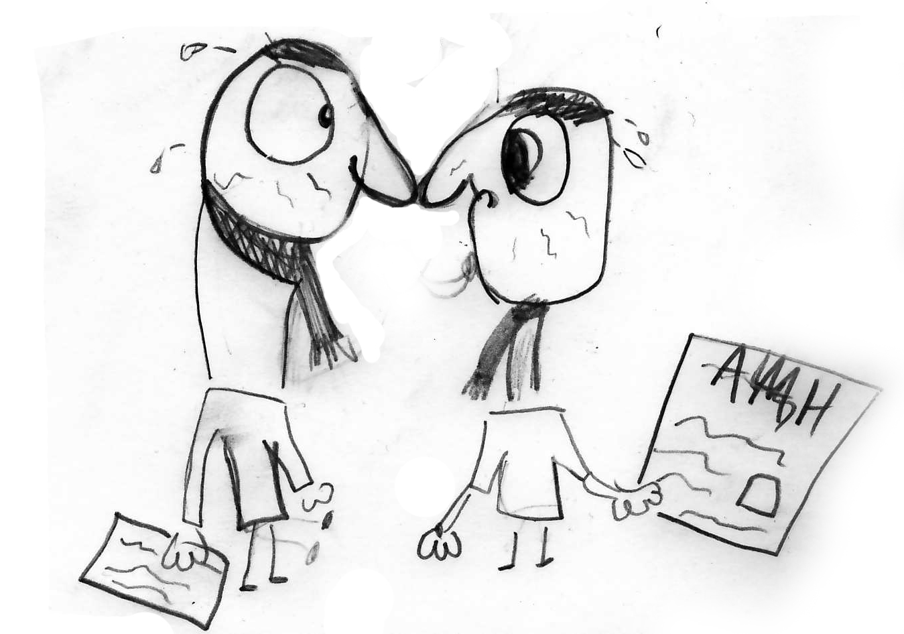

Publications

- Ferreira, T. A. E., Mattheakis, M., and Protopapas, P., A New Artificial Neuron Proposal with Trainable Simultaneous Local and Global Activation Function, 2021, arXiv:2101.06100 [pdf]
- D, Sondak, P. Protopapas, Learning a Reduced Basis of Dynamical Systems using an Autoencoder , 2020, arXiv:2011.07346 [pdf]
- Fang, R., Sondak, D., Protopapas, P. and Succi, S., Neural network models for the anisotropic Reynolds stress tensor in turbulent channel flow. , 2020, Journal of Turbulence, 21(9-10), pp.525-543 [pdf]
- Zorich, L., Pichara, K. and Protopapas, P., Streaming classification of variable stars. Monthly Notices of the Royal Astronomical Society , 2020, 492(2), pp.2897-2909 [pdf]
- Flamant, C., Protopapas, P. and Sondak, D., Solving Differential Equations Using Neural Network Solution Bundles, 2020, arXiv preprint arXiv:2006.14372, [ pdf]
- Chen, F., Sondak, D., Protopapas, P., Mattheakis, M., Liu, S., Agarwal, D. and Di Giovanni, M., NeuroDiffEq: A Python package for solving differential equations with neural networks , 2020, Journal of Open Source Software, 5(46), p.1931 [pdf]
- Astorga, N., Huijse, P., Protopapas, P. and Estévez, P., Matching Priors and Conditionals for Clustering, 2020, August, MPCC, In European Conference on Computer Vision (pp. 658-677). Springer, Cham [pdf]
- Wu, W., Protopapas, P., Yang, Z. and Michalatos, P., Gender classification and bias mitigation in facial images , 2020. In 12th ACM Conference on Web Science (pp. 106-114) [pdf]
- H. Jin, M. Mattheakis, P. Protopapas, Unsupervised Neural Networks for Quantum Eigenvalue Problems, 2020, arXiv:2010.05075 [ pdf]
- Mattheakis, M., Sondak, D., Dogra, A.S. and Protopapas, P., Hamiltonian Neural Networks for solving differential equations , 2020., arXiv:2001.11107 [pdf]
- Paticchio, A., Scarlatti, T., Mattheakis, M., Protopapas, P., and Brambilla, M., Semi-supervised Neural Networks solve an inverse problem for modeling Covid-19 spread, arXiv e-prints: 2020arXiv201005074P , 2020, [pdf
- Randle, D., Protopapas, P. and Sondak, D., Unsupervised Learning of Solutions to Differential Equations with Generative Adversarial Networks, 2020, arXiv preprint arXiv:2007.11133 [pdf]
- Carrasco-Davis, R., Cabrera-Vives, G., Förster, F., Estevez, P.A., Huijse, P., Protopapas, P., Reyes, I., Martínez-Palomera, J. and Donoso, C., Deep learning for image sequence classification of astronomical events , 2019, Publications of the Astronomical Society of the Pacific, 131(1004), p.108006 [pdf]
- Mattheakis, M., Protopapas, P., Sondak, D., Di Giovanni, M. and Kaxiras, E., Physical symmetries embedded in neural networks , 2019, arXiv preprint arXiv:1904.08991 [pdf]
- Pérez-Carrasco, M., Cabrera-Vives, G., Martinez-Marin, M., Cerulo, P., Demarco, R., Protopapas, P. and Godoy, J., Multiband galaxy morphologies for CLASH: a convolutional neural network transferred from CANDELS, 2019, Publications of the Astronomical Society of the Pacific, 131(1004), p.108002 [pdf]
- Pieringer, C., Pichara, K., Catelán, M. and Protopapas, P., An Algorithm for the Visualization of Relevant Patterns in Astronomical Light Curves, 2019, Monthly Notices of the Royal Astronomical Society, 484(3), pp.3071-3077 [pdf]
- Astudillo, J., Protopapas, P., Pichara, K. and Huijse, P., An Information Theory Approach on Deciding Spectroscopic Follow-ups, 2019, The Astronomical Journal, 159(1), p.16 [pdf]
- Bianchi, A., Vendra, M.R., Protopapas, P. and Brambilla, M., Improving image classification robustness through selective CNN-filters fine-tuning , 2019, arXiv preprint arXiv:1904.03949. [ pdf]
- Saldias-Fuentes, B. and Protopapas, P., A Full Probabilistic Model for Yes/No Type Crowdsourcing in Multi-Class Classification , 2019, In Proceedings of the 2019 SIAM International Conference on Data Mining (pp. 756-764). Society for Industrial and Applied Mathematics. [ pdf]
- Holman, M.J., Payne, M.J., Fraser, W., Lacerda, P., Bannister, M.T., Lackner, M., Chen, Y.T., Lin, H.W., Smith, K.W., Kokotanekova, R. and Young, D., A dwarf planet class object in the 21: 5 resonance with Neptune, 2018, The Astrophysical Journal Letters, 855(1), p.L6 [ pdf]
- Ramponi, G., Protopapas, P., Brambilla, M. and Janssen, R., T-cgan: Conditional generative adversarial network for data augmentation in noisy time series with irregular sampling , 2018, arXiv preprint arXiv:1811.08295 [ pdf]
- Martínez-Palomera, J., Förster, F., Protopapas, P., Maureira, J.C., Lira, P., Cabrera-Vives, G., Huijse, P., Galbany, L., De Jaeger, T., González-Gaitán, S. and Medina, G., The High Cadence Transit Survey (HiTS): Compilation and Characterization of Light-curve Catalogs , 2018, The Astronomical Journal, 156(5), p.186. [ pdf]
- Huijse, P., Estévez, P.A., Förster, F., Daniel, S.F., Connolly, A.J., Protopapas, P., Carrasco, R. and Príncipe, J.C., Robust Period Estimation Using Mutual Information for Multiband Light Curves in the Synoptic Survey Era. The Astrophysical Journal Supplement Series, 2018, 236(1), p.12 [ pdf]
- Belhaj, M., Protopapas, P. and Pan, W., Deep variational transfer: Transfer learning through semi-supervised deep generative models, 2018, arXiv preprint arXiv:1812.03123 [ pdf]
- Maat, J.R., Gianniotis, N. and Protopapas, P., July. Efficient optimization of echo state networks for time series datasets, 2018, In 2018 International Joint Conference on Neural Networks (IJCNN) (pp. 1-7). IEEE [ pdf]
- Hoernle, N., Gal, K., Grosz, B., Protopapas, P. and Rubin, A., Modeling the Effects of Students' Interactions with Immersive Simulations Using Markov Switching Systems, 2018, International Educational Data Mining Society [ pdf]
- Martínez-Galarza, J.R., Protopapas, P., Smith, H.A. and Morales, E.F., Unraveling the Spectral Energy Distributions of Clustered YSOs, 2018, The Astrophysical Journal, 864(1), p.71. [ pdf]
- Davis, R.C., Cabrera-Vives, G., Förster, F., Estévez, P.A., Huijse, P., Protopapas, P., Reyes, I., Martínez, J. and Donoso, C., Deep Learning for Image Sequence Classification of Astronomical Events, 2018, arXiv preprint arXiv:1807.03869 [ pdf]
- Jiang, Y.F., Green, P.J., Greene, J.E., Morganson, E., Shen, Y., Pancoast, A., MacLeod, C.L., Anderson, S.F., Brandt, W.N., Grier, C.J. and Rix, H.W., Detection of time lags between quasar continuum emission bands based on Pan-STARRS light curves, 2017, The Astrophysical Journal, 836(2), p.186 [pdf]
- Benavente, P., Protopapas, P. and Pichara, K., Automatic survey-invariant classification of variable stars, 2017, The Astrophysical Journal, 845(2), p.147 [ pdf]
- Castro, N., Protopapas, P. and Pichara, K., Uncertain classification of variable stars: handling observational GAPS and noise, 2017, The Astronomical Journal, 155(1), p.16 [ pdf]
- Protopapas, P., Recurrent Neural Network Applications for Astronomical Time Series, 2017, In American Astronomical Society Meeting Abstracts# 230 (Vol. 230, pp. 104-03). [ pdf]
- Mackenzie, C., Pichara, K. and Protopapas, P., Clustering-based feature learning on variable stars, 2016, The Astrophysical Journal, 820(2), p.138 [ pdf]
- Pichara, K., Protopapas, P. and León, D., Meta-classification for variable stars, 2016, The Astrophysical Journal, 819(1), p.18 [ pdf]
- Narasimhan, H., Pan, W., Kar, P., Protopapas, P. and Ramaswamy, H.G., December. Optimizing the multiclass F-measure via biconcave programming, 2016, In 2016 IEEE 16th international conference on data mining (ICDM) (pp. 1101-1106). IEEE [ pdf]
- Nun, I., Protopapas, P., Sim, B. and Chen, W., Ensemble learning method for outlier detection and its application to astronomical light curves The Astronomical Journal, 152(3), p.71 [ pdf]
- Kim, R., Empirical Methods in Peer Prediction (Doctoral dissertation) [ pdf]
- Xia, X., Protopapas, P. and Doshi-Velez, F., Cost-Sensitive Batch Mode Active Learning: Designing Astronomical Observation by Optimizing Telescope Time and Telescope Choice In Proceedings of the 2016 SIAM International Conference on Data Mining (pp. 477-485). Society for Industrial and Applied Mathematics [ pdf]
- Nun, I., Protopapas, P., Sim, B., Zhu, M., Dave, R., Castro, N. and Pichara, K., Fats: Feature analysis for time series, 2105, arXiv preprint arXiv:1506.00010 [ pdf]
- Protopapas, P., Huijse, P., Estevez, P.A., Zegers, P., Principe, J.C. and Marquette, J.B., A novel, fully automated pipeline for period estimation in the eros 2 data set, 2015, The Astrophysical Journal Supplement Series, 216(2), p.25 [ pdf]
- Yang, J.J., Wang, X., Protopapas, P. and Bornn, L., Fast and optimal nonparametric sequential design for astronomical observations, 2015, arXiv preprint arXiv:1501.02467 [ pdf]
- Kim, D.W., Protopapas, P., Bailer-Jones, C.A., Byun, Y.I., Chang, S.W., Marquette, J.B. and Shin, M.S., The EPOCH Project-I. Periodic variable stars in the EROS-2 LMC database, 21014, Astronomy & Astrophysics, 566, p.A43 [ pdf]
- Huijse, P., Estevez, P.A., Protopapas, P., Principe, J.C. and Zegers, P., Computational intelligence challenges and applications on large-scale astronomical time series databases, 2014, IEEE Computational Intelligence Magazine, 9(3), pp.27-39 [ pdf]
- Nun, I., Pichara, K., Protopapas, P. and Kim, D.W., Supervised detection of anomalous light curves in massive astronomical catalogs, 2014 The Astrophysical Journal, 793(1), p.23 [ pdf]
- Verde, L., Protopapas, P. and Jimenez, R., The expansion rate of the intermediate universe in light of Planck, 2014, Physics of the Dark Universe, 5, pp.307-314 [ pdf]
- Verde, L., Protopapas, P. and Jimenez, R., Planck and the local Universe: Quantifying the tension, 2013, Physics of the Dark Universe, 2(3), pp.166-175 [ pdf]
- Pichara, K. and Protopapas, P., Automatic classification of variable stars in catalogs with missing data, 2103, The Astrophysical Journal, 777(2), p.83 [ pdf]
- Chang, S.W., Protopapas, P., Kim, D.W. and Byun, Y.I., Statistical properties of Galactic δ Scuti stars: revisited, 2013, The Astronomical Journal, 145(5), p.132 [ pdf]
- Huijse, P., Estevez, P.A., Protopapas, P., Zegers, P. and Principe, J.C., An information theoretic algorithm for finding periodicities in stellar light curves, 2012, IEEE Transactions on Signal Processing, 60(10), pp.5135-5145 [ pdf]
- Pichara, K., Protopapas, P., Kim, D.W., Marquette, J.B. and Tisserand, P., An improved quasar detection method in EROS-2 and MACHO LMC data sets, 2012, Monthly Notices of the Royal Astronomical Society, 427(2), pp.1284-1297 [ pdf]
- Wang, Y., Khardon, R. and Protopapas, P., Nonparametric Bayesian estimation of periodic light curves 2012, The Astrophysical Journal, 756(1), p.67 [ pdf]
- Kim, D.W., Protopapas, P., Trichas, M., Rowan-Robinson, M., Khardon, R., Alcock, C. and Byun, Y.I., A Refined QSO Selection Method Using Diagnostics Tests: 663 QSO Candidates in the Large Magellanic Cloud The Astrophysical Journal, 747(2), p.107 [ pdf]
- Blocker, A.W. and Protopapas, P., Semi-parametric robust event detection for massive time-domain databases, 2012, In Statistical Challenges in Modern Astronomy V (pp. 177-187). Springer, New York, NY [ pdf]
- Wang, Y., Khardon, R. and Protopapas, P., Infinite shift-invariant grouped multi-task learning for gaussian processes, 2012, arXiv preprint arXiv:1203.0970 [ pdf]
- Huijse, P., Estévez, P.A., Protopapas, P., Zegers, P. and Príncipe, J.C., Computational Challenges in Processing Very Large Astronomical Survey Databases, 2012, In 2012 9th Asia-Pacific Symposium on Information and Telecommunication Technologies (APSITT) (pp. 1-6). IEEE [ pdf]
- Kim, D.W., Protopapas, P., Byun, Y.I., Alcock, C., Khardon, R. and Trichas, M., Quasi-stellar object selection algorithm using time variability and machine learning: Selection of 1620 quasi-stellar object candidates from MACHO Large Magellanic Cloud database ,2011, The Astrophysical Journal, 735(2), p.68 [ pdf]
- Huijse, P., Estévez, P.A., Zegers, P., Príncipe, J.C. and Protopapas, P., Period estimation in astronomical time series using slotted correntropy, 2011, IEEE Signal Processing Letters, 18(6), pp.371-374 [ pdf]
- Wang, Y., Khardon, R. and Protopapas, P., Nonparametric Bayesian estimation of periodic functions 2011, arXiv preprint arXiv:1111.1315 [ pdf]
- Mishra, B.P., Principe, J.C., Estevez, P.A. and Protopapas, P., 2011, In 2011 IEEE International Workshop on Machine Learning for Signal Processing (pp. 1-6). IEEE [ pdf]
- Fuentes, C.I., Holman, M.J., Trilling, D.E. and Protopapas, P., Trans-Neptunian objects with Hubble Space Telescope ACS/WFC 2011, The Astrophysical Journal, 722(2), p.1290 [ pdf]
- Wang, Y., Khardon, R. and Protopapas, P., Shift-invariant grouped multi-task learning for Gaussian processes, 2010, In Joint European Conference on Machine Learning and Knowledge Discovery in Databases (pp. 418-434). Springer, Berlin, Heidelberg [ pdf]
- Estévez, P.A., Huijse, P., Zegers, P., Principe, J.C. and Protopapas, P., Period detection in light curves from astronomical objects using correntropy, 2010, In The 2010 International Joint Conference on Neural Networks (IJCNN) (pp. 1-7). IEEE [ pdf]
- U. Rebbapragada, P. Protopapas, C. Brodley, C. Alcock, Finding Anomalies in Periodic Time Series, Machine Learning, p. 281, vol. 74, (2009) [pdf]
-
S. Pember, C. Brodley, P. Protopapas, and A. Kilmer, Similarity Retrieval in Large Datasets using Rank Revealing QR, ICDM, Under review at IEEE PAMI, (2009).
-
Dan Preston, Pavlos Protopapas and Carla Brodley, Event Detection in Time Series, Proceedings of the Ninth SIAM International Conference on Data Mining, p. 61-72, (2009) [pdf]
-
Dan Preston, Pavlos Protopapas and Carla Brodley, Discovering Arbitrary Event Types in Time Series, SIAM Best of 09 SDM, (2009)
-
Dae-Won Kim, Pavlos Protopapas, Charles Alcock, Yong-Ik Byun, Federica Bianco, Detection of Flare Stars in TAOS 2-year Data, The Astronomer's Telegram, vol. #2035, (2009) [html]
-
Gabriel Wachman, Roni Khardon, Pavlos Protopapas, Charles R. Alcock, Kernels for Periodic Time Series Arising in Astronomy, ECML PKDD, (2009) [pdf]
-
Dae-Won Kim, Pavlos Protopapas, Yong-Ik Byun, Charles Alcock and the TAOS collaboration, The TAOS Project Stellar Variability I. Detection of Low-Amplitude δ Scuti Stars and a Revised Catalog of All Known δ Scuti Stars, submitted to Astronomical Journal, (2009) [pdf]
-
J.~H. Wang, P. Protopapas, W. –P. Chen, C. R. Alcock, W. S. Burgett, T. Dombeck, J. S. Morgan, P. A. Price, J. L. Tonry, Searching for sub-kilometer TNOs using Pan-STARRS video mode lightcurves: Preliminary study and evaluation using engineering data, submitted
to Astronomical Journal, (2009) [pdf]
-
A. W. Blocker, P. Protopapas, C. R. Alcock, A Bayesian approach to the analysis of time symmetry in light curves: Reconsidering Scorpius X-1 occultations, The Astronomical Journal, Volume 138, Issue 2, pp. 568-578,
(
2009) [pdf]
-
F. Bianco, P. Protopapas, B. McLeod, C. R. Alcock, M. J. Holman, M. J. Lehner. A Search for Occultations of Bright Stars by Small Kuiper Belt Objects using Megacam on the MMT, The Astronomical Journal,
Volume 138, Issue 2, pp. 568-578, (2009) [pdf]
-
D-W Kim, P. Protopapas, C. Alcock, B. Yong-Ik, F. Bianco, De-Trending Time Series for Astronomical Variability Surveys, Monthly Notices of the Royal Astronomical Society, Volume 397, Issue 2, pp. 558-568, (2008) [pdf]
-
R. E. Schild, J. Lovegrove, P. Protopapas, Reverberation in the UV-Optical Continuum Brightness Fluctuations of MACHO Quasar, The Astronomical Journal, Volume 138, Issue 2, pp. 421-427, (2009)
[
pdf]
-
Zhan et al., First Results from the Taiwanese-American Occultation Survey (TAOS), ApJL, 685, L157, (2008) [pdf]
-
E. Morikawa, R. Dave, P. Protopapas, A Novel GUI Based Interactive Work Flow Application for Exploratory and Batch Processing of Light Curves, Astronomical Data Analysis Software and Systems XVII, 394, 357, (
2008) [pdf]
-
Lorenzo Faccioli, Charles Alcock, Kem Cook, Gabriel E. Prochter, Pavlos Protopapas, David Syphers, Eclipsing Binary Stars in the Large and Small Magellanic Clouds from the MACHO Project: The Sample, AJ, 134, 1963-1994,
(2007) [pdf]
-
Holman, Matthew J.; Protopapas, P.; Tholen, D. J., Searching for Solar System Wide Binaries with Pan-STARRS-1, AAS, 39, 52, (2007)
-
Dave, R.; Protopapas, P.; Lehner, M., Virtual Astronomical Pipelines, Astronomical Data Analysis Software and Systems XVI ASP Conference Series, Vol. 376, proceedings of the conference held 15-18 October in Tucson,
Arizona, USA. Edited by Richard A. Shaw, Frank Hill and David J. Bell., p.253, (2006) [pdf]
-
J. M. Diego, M. Tegmark, P. Protopapas, H. B. Sadvik, Combined reconstruction of weak and strong lensing data with WSLAP, MNRAS, 375, 958-970, (2007) [pdf]
-
Eamonn Keogh, Li Wei, Xiaopeng Xi, Michail Vlachos, Sang-Hee Lee, Pavlos Protopapas. Supporting, Exact Indexing of Shapes under Rotation Invariance with Arbitrary
Representations and Distance Measures, VLDB: 882-893, (2006) [pdf]
-
P. Protopapas, J. M. Giammarco, L. Faccioli, M. F. Struble, R. Dave , C. Alcock, Finding outlier light-curves in catalogs of periodic variable stars, MNRAS, 369, 677,
(2006) [pdf]
-
Pavlos Protopapas, Raul Jimenez , Charles Alcock , Fast identification of transits from light-curves, MNRAS, 362, 460, (2005) [
pdf]
-
J. M. Diego, H. B. Sadvik, P. Protopapas, M. Tegmark, N. Benitez, T. Broadhurst, Non-parametric mass reconstruction of A1689 from strong lensing data with SLAP, MNRAS, 362, 1247,
(2005) [pdf]
-
J. M. Diego, P. Protopapas, H. B. Sadvik, M. Tegmark, Non-parametric inversion of strong lensing systems, MNRAS, 360, 477, (2005) [pdf]
-
A. Klein, P. Protopapas, S. G. Rohoziński, K. Starosta, Kerman-Klein-Dönau-Frauendorf model for odd-odd nuclei: Formal theory, Physical Review C, vol. 69, Issue 3, id. 034338,
(2005) [pdf]
-
R. D. Amado, M. Á. Halász, P. Protopapas, Two Skyrmion dynamics with ω mesons, Physical Review D (Particles and Fields), Volume 61, Issue 7, (2000) [pdf]
-
Y. Lu, P. Protopapas, R. D. Amado, Nucleon-antinucleon interaction from the Skyrme model. II. Beyond the product ansatz, Physical Review C, 57, 1983-1990, (1998) [pdf]
-
P. Protopapas, A. Klein, Possible solution of the Coriolis attenuation problem, (1997), Phys. Rev. C, 55, 1810-1818 [
pdf]
-
P. Protopapas, A. Klein, Derivation and assessment of strong coupling core-particle model from the Kerman-Klein-Dönau-Frauendorf theory,
(1997), Physical Review C (Nuclear Physics), Volume 55, Issue 2, pp.699-713 [pdf]
-
P. Protopapas, A. Klein, Application of the Kerman-Klein Method to the Solution of a Spherical Shell Model for a Deformed Rare-Earth Nucleus,
(1997), Physical Review Letters, Volume 78, Issue 23, June 9, pp.4347-4350 [pdf]
-
P. Protopapas, A. Klein, N. R. Walet, Further application of a semimicroscopic core-particle coupling method to the properties of 155,157Gd and 159Dy,
(1996), Physical Review C (Nuclear Physics), Volume 53, Issue 4, April pp.1655-1659 [pdf]
-
P. Protopapas, A. Klein, N. R. Walet, Application of a semimicroscopic core-particle coupling method to the backbending in odd deformed nuclei, (1996)
, Physical Review C (Nuclear Physics), Volume 54, Issue 2, pp.638-645 [pdf]
- P. Protopapas, A. Klein, N. R. Walet, Calculation of the properties of the rotational bands of 155,157Gd, (1994), Physical Review C (Nuclear Physics), Volume 50, Issue 1, pp.245-256 [pdf]